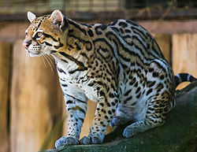
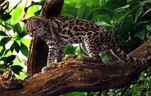

Todos los felinos son carnívoros y, en la mayoría de los casos, son predadores que acechan a sus presas de manera solitaria. Los felinos salvajes están presentes en África, Europa, Asia y América. Algunos están habituados a los hábitas boscosos, otros a los ambientes áridos y algunos incluso a los humedales y las montañas. Sus patrones de actividad varían desde los nocturnos hasta los crepusculares y los diurnos, dependiendo de las presas que prefieran.
| Nombre científico | Nombre común | Longitud de cabeza y cuerpo | Longitud de cola | Peso | Estado de conservación | Imagen |
|---|---|---|---|---|---|---|
| Leopardus pardalis | manigordo,ocelote | 70-90 cm | 30-40 cm | 11 kg | LC (preocupación menor) |  |
| Leopardus tigrinus | caucel,tigrillo | 39-78 cm | 20-42 cm | 2-3 kg | VU (vulnerable) | |
Leopardus wiedii | caucel,tigrillo | 40 -60 cm | 3.5 kg | NT (casi amenazado) |  | Panthera onca | tigre,jaguar | 162 -183 cm | 75 cm | 36-160 kg | NT (casi amenazado) | |
Puma concolor | puma,león de montaña | 150 -170 cm | 70-100 cm | 100-120 kg | LC (preocupación menor) | |
Puma yagouarundí | yaguarundí,león breñero | 50 -70 cm | 30-60 cm | 3.5-9.1 kg | LC (preocupación menor) | |